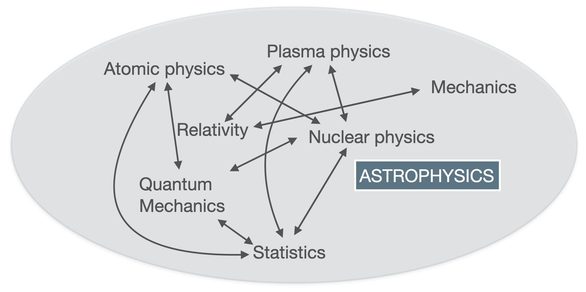

Lecture 1 - Stellar properties
Astrophysics is very multidisciplinary

Astrophysics is very multidisciplinary because of ‘several effects’ that come into play in the physics of stars, galaxies, the universe… it is an ‘arena’ of different fields of physics (but also mathematics and chemistry), spanning across classical mechanics, relativity, nuclear and particle physics, statistics, atomic and molecular physics, plasma physics, quantum mechanics and more (the list above and in the picture is not exhaustive)! In this course you will see how some of these fields play a role in the physics of stars.
–> –>